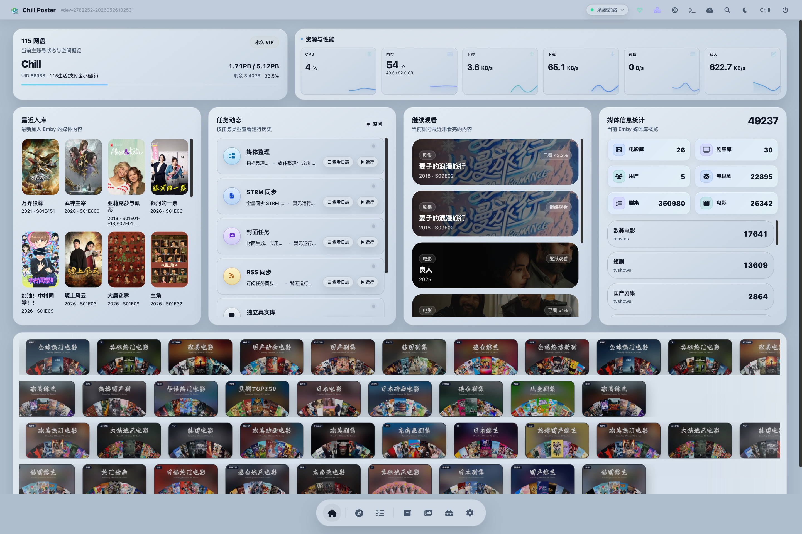

01
Emby 封面系统
手动封面、封面设计、自动封面、备份恢复、字体管理和模板管理，统一维护媒体库视觉风格。
面向 Emby 与 115 网盘用户，把封面生成、资源转存、302 网关、媒体整理、STRM 同步、RSS 真实库、缺集统计、通知和运维任务放进同一个管理端。重点不是“看起来很多功能”，而是让日常入库、维护和排障有固定流程。

NAS 实机仪表盘截图，来源于当前运行中的 ChillPoster 管理端。
页面使用 NAS 上正在运行的 ChillPoster 仪表盘截图作为展示素材。后续如果要做官网，可以继续补充封面系统、媒体整理、一条龙配置、缺集统计等页面截图。
这里按实际菜单和模块解释 ChillPoster 做什么，不写虚的功能名，也不把未确认的页面效果画成成品。
手动封面、封面设计、自动封面、备份恢复、字体管理和模板管理，统一维护媒体库视觉风格。
资源转存、目录拓扑、媒体整理、失败隔离、定时清理、秒传上传和 Life 事件监控协同工作。
根据配置启动一个或多个网关服务，支持多 Emby、多端口映射和 115 资源访问链路。
识别测试、TMDB 信息、重命名模板、二级分类、整理记录和 STRM 同步让入库过程更稳定。
发现内容、统计缺集、比对 TMDB、跳转资源搜索或 MoviePilot 订阅，形成补齐闭环。
微信、Telegram、Webhook、Docker 管理、系统健康、Emby 任务中心与版本升级集中在一个后台。
下面是 ChillPoster 里真实存在的协作关系：发现、转存、整理、STRM、刷新和通知。每一步都对应后台配置或任务记录。
Wiki 按安装、配置、功能、运维和发布来写，尽量说明在哪里配置、会影响什么、排障先看哪里。
正式使用推荐 Docker 或 Docker Compose。本地开发可以用 Python + Vite 构建前端后启动。
默认访问 http://NAS_IP:5256。不建议直接暴露公网，远程访问优先使用 VPN 或带鉴权的反代。
如果启用 302 网关，需要额外映射配置中的网关端口，例如 8011。